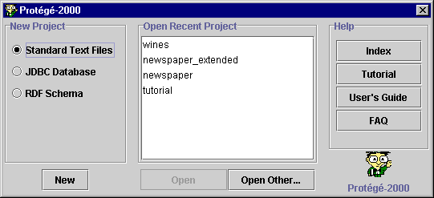

Opening a Project
Opening a Project

You can open a existing Protégé-2000 project in one of two ways:
Opening a Project When You Start Protégé
To open an existing project when you first start Protégé-2000:
- Start Protégé.
A dialog box allows you to create a new project, open a recent project, or
get help.

- To select from the list of recent projects, highlight the project you want
from the list and click OK. OR
- To open a project that is not listed, click Open Other... Locate
the pprj project you wish to open and click OK.
Opening a Project From Within Protégé
- Select Open from the Project
menu or click the Open Project button . A Project dialog box allows you to select the project.
- Select the pprj project you wish to open.
- Click OK.
For Windows systems, you can also open a project by double-clicking on the pprj
file in Windows Explorer.
No matter what format your project is in, you can create, open, and save your projects directly via the pprj
file. You do not need to name or access other file types unless you wish to
build a project.
To save the open project to disk after you have edited it, select Save
from the Project menu.
Next: Saving a Project
Project Table of Contents